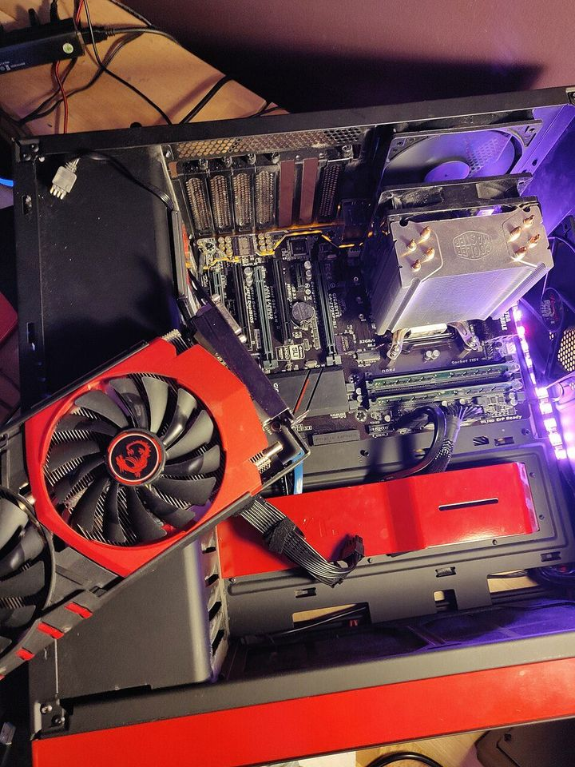
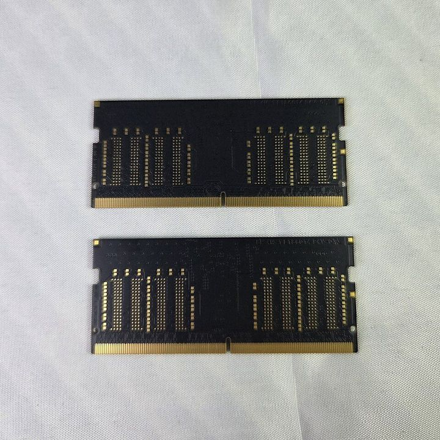
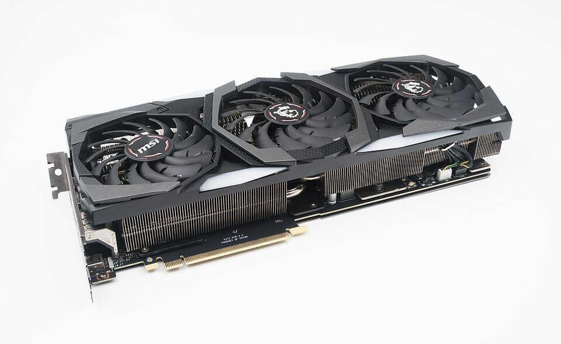
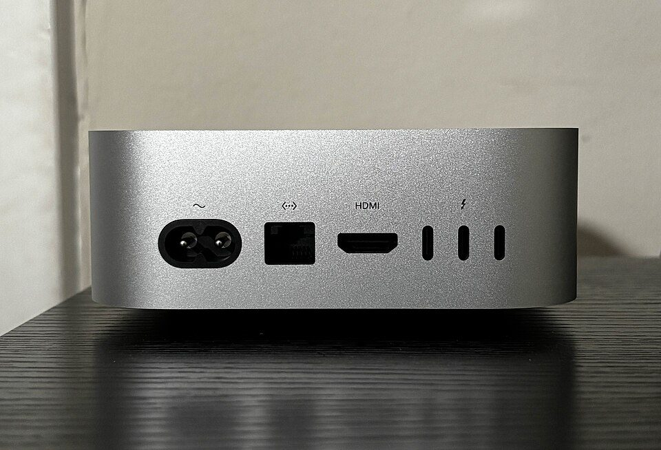

ローカルLLMの始め方：自分のパソコンでAIを動かす利点と弱点、必要なメモリ、ツールとモデルの選び方（2026年版）
要点まとめ
文章で質問すると答えを返すAIは、大規模言語モデル（LLM）という仕組みで動いています。インターネットの向こうで動くAIでは、入力した文（プロンプト）は運営元のサーバーで処理されます。たとえばOllamaは、自社のクラウドのモデルを使うときは、サービスを提供するためにプロンプトと答えを処理すると説明しています[1]。これに対し、モデルのファイルを自分のパソコンに置いて動かす使い方を「ローカルLLM」と呼びます。この記事では、Google・OpenAI・Metaなどのモデルの公開元と、Ollama・LM Studioなどのツールの公式の説明をもとに、自分のパソコンで動くかどうかの目安、何から入れればよいか、気をつけることをまとめました。メモ帳アプリと組み合わせる使い方は、Obsidianと生成AIの記事でも紹介しています。
ローカルLLMとは：クラウドのAIとの違い
違いは、入力した文がどこで処理されるかです。ツールの公式の説明をもとに、通り道を図にしました。
モデルは「重み」の入った大きなファイル
パラメータが多いほど賢くなりやすいが、重くなる
モデルの中身は、重みなどの「パラメータ」と呼ばれる大量の数値です[5]。モデルの大きさは、このパラメータの数で表します。例えばPhi-4は、140億パラメータ（14B）のモデルです[6]。Googleは、パラメータの数とビット数（数値の精度）が大きいモデルほど一般に能力が高い一方、計算・メモリ・電力の費用も大きくなると説明しています[2]。
「量子化」で、数値の精度を下げて小さくする
4bitにすると、16bitの約4分の1のメモリで済む
量子化は、モデルの数値を少ないビット数で表して、軽くする方法です。Googleは、ビット数の低いモデルは能力が下がるものの、用途によっては十分なことがあると説明しています[2]。Appleが端末の中で動かすモデルは、1つの重みを2ビットに圧縮しています[7]。
くわしく
- GGUF（下で説明）の量子化の種類のうち「Q4_K」は4bitの一種で、実質は1重みあたり4.5ビット[8]
「GGUF」は、モデルを配るためのファイル形式
読み込みが速くなるよう作られた形式
Hugging Face（モデルの共有サイト）は、GGUFを、モデルの読み書きが速く推論（答えを作ること）に向いた形式として説明しています。GGUFは、ローカルで動かすためのソフト「llama.cpp」の開発者が作りました[8]。
「26B A4B」のようなモデルも、全体をメモリに載せる
動かす部分が少なくても、必要なメモリは全体の大きさ
Gemma 4 26B A4Bは「MoE（専門家の混合）」という作りのモデルで、答えの文字のかたまり（トークン）を1つ作るごとに使うのは40億パラメータだけですが、260億パラメータ全部をメモリに載せる必要があります。Googleは、必要なメモリは40億より260億のモデルに近いと説明しています[2]。
「オープンウェイト」と「オープンソースAI」は違う
OSIの定義は、重みのほか学習データの情報も求める
オープンソースの考え方を広めている団体OSIは、2024年10月28日に「オープンソースAIの定義 1.0」を公表しました[9]。定義は、目的を問わず許可なく使えることなどに加え、学習に使ったデータについて、詳しい人が同等のシステムを作れる程度の情報と、重みなどのパラメータを、OSIが認める条件で出すことを求めています[5]。重みを公開したモデルを、OpenAIは「オープンウェイト」と呼んでいます[10]。国立情報学研究所は、LLM-jp-4でこの定義に配慮し、第三者も手に入れられる学習データを用意したとしています[11]。ソフトのライセンスの基本は、オープンソースのソフトの記事にまとめています。
良い点と弱い点
良い点：入力した文を運営元に送らない
Ollamaは、手元で動かす分はプロンプトを見ないと説明
Ollamaは、手元で動かすときは、運営元がプロンプトやデータを見ることはないと説明しています[1]。Chromeに組み込まれたAI（Gemini Nano）も、使うときにデータをGoogleや第三者に送らないとしています[12]。MicrosoftのFoundry Localも、答えを作る処理は端末の中だけで行うとしていますが、モデルの取得などにはネットを使います[13]。
良い点：ネットにつながなくても使える
モデルを先に取得しておけば、オフラインで動く
LM Studioは、先にモデルのファイルを取得しておけば、完全にオフラインで動くと説明しています[15]。Chromeの組み込みAIも、ネットが要るのは最初のモデルのダウンロードだけで、その後は接続なしで使えるとしています[12]。
良い点：手元で動かす分は、利用料がかからない
Ollamaの料金表では、ローカルでの実行は0ドル
Ollamaの料金表は、「Pay as you go（使った分だけ払う）」の区分を0ドルとし、その中に「モデルをローカルで動かす」を挙げています。自分の機材でモデルを動かすのは常に無制限だとしています[16]。LM Studioは、2025年7月8日から、家庭でも職場でも無料で使えるようになりました[17]。ただし、パソコンの購入費や電気代は自分の負担です（筆者の見解）。
弱い点：保存場所とメモリをたくさん使う
モデルは数十〜数百GBになることがある
Ollamaは、本体のインストールに4GB以上の空きが必要で、ほかにモデルの保存場所が要り、モデルは数十〜数百GBになりうると説明しています[18]。Chromeの組み込みAIも、22GB以上の空き容量を条件にしています[12]。LM Studioは、モデルを読み込むとは、重みなどを載せるためにパソコンのメモリを確保することだと説明しています[19]。
弱い点：小さいモデルほど、できることが限られる
もっともらしい誤りを答えることもある
Googleは、パラメータやビット数の少ないモデルは能力が下がると説明しています[2]。MicrosoftはPhi-4の説明書きで、言語モデルは、もっともらしいが不正確・古い内容を作ることがあると注意しています[6]。同じ説明書きは、Phi-4は主に英語で学習したため、英語以外の言語では性能が下がるとしています[6]。日本語で使うなら、日本語に対応したモデルかどうかを確かめるのがよいでしょう（筆者の見解）。
弱い点：電気代と、更新の手間がかかる
電力の公的な目安はなく、製品の値を見るしかない
ローカルLLMの消費電力について、公的な目安は見つかりませんでした。製品の公式の値では、Mac mini（M6、16GBのユニファイドメモリ）の消費電力は待機時4W・最大70Wです[20]。パソコンに差して使うGeForce RTX 5060 Tiは、グラフィックボードの電力（Total Graphics Power）が180Wで、パソコン全体に600Wの電源を求めています[21]。どちらもAIを動かしたときの実測ではありません。また、Ollamaは、新しいモデルに対応するため定期的に更新していて、インストーラーが最新の版に保つのを助けると説明しています[18]。更新を続けるのは、使う人の役目になります（筆者の見解）。

必要なパソコンの目安（メモリ・VRAM・NPU）
モデルの公開元とツールが目安として示しているのは、主にメモリの量です。まず、メモリの種類を整理します。
VRAM・RAM・ユニファイドメモリ
VRAMが足りないとRAMも使うが、答えが遅くなる
VRAMは、GPU（画像の処理などを受け持つ部品）専用のメモリです。Ollamaは、Gemma 4の一番小さい版（E2B）について、空きVRAM 8GB、Macではユニファイドメモリ（CPUとGPUで共有するメモリ）8GBを勧めています。VRAMが少ないとふつうのメモリ（RAM）も使えますが、答えが遅くなることがあるとしています[3]。LM Studioは、WindowsではRAM 16GB以上と、GPU専用のVRAM 4GB以上を勧めています[15]。
Googleの表は、重みを読み込むのに要るGPUなどのメモリに、20%の余裕を足した値です。使うツールや環境で変わることがあるとしています[2]。
会話が長いほど、メモリが増える
表の値は「重みだけ」。会話の分は別に要る
Googleは、上の表は重みを読み込む分だけで、ソフトや、会話の文脈（コンテキストウィンドウ）に要るVRAMは含まないと説明しています。文脈の分は、入力と出力の長さ（トークン数）に応じて増えます[2]。Ollamaも、長い文脈ほどメモリが要るとしています[3]。LM Studioは、8GBのMacでも使えることはあるが、小さいモデルと控えめな文脈の長さにとどめるよう勧めています[15]。
| モデル | 公開元が示すメモリの目安 | Ollamaで取得するファイルの大きさ |
|---|---|---|
| Gemma 4 E2B | 2.9GB（4bit、重みだけ）[2] | 4.6〜7.5GB（gemma4:e2b）[22] |
| Gemma 4 E4B | 4.5GB（4bit、重みだけ）[2] | 6.6〜9.5GB（gemma4:e4b。gemma4の既定）[22] |
| Gemma 4 12B | 6.7GB（4bit、重みだけ）[2] | 7.7〜8.0GB（gemma4:12b）[22] |
| Gemma 4 31B | 17.5GB（4bit、重みだけ）[2] | 19〜20GB（gemma4:31b）[22] |
| gpt-oss-20b | 16GBのメモリで動く（OpenAI）[10] | 14GB（gpt-oss:20b）[23] |
| gpt-oss-120b | 80GBのGPU 1枚で動く（OpenAI）[10] | 65GB（gpt-oss:120b）[23] |
| Muse Glimmer（300億パラメータ） | 約4bitで20GB未満。会話の分や画像を読む部品なども含め、24GBか32GBに収める想定（Meta）[24][25] | — |
2つの列は、測っているものが違います。左はGoogleなどが示す「動かすのに要るメモリ」、右はOllamaで取得するファイルの大きさです。Gemma 4では右の方が大きく、差の理由は公式の説明に見当たりませんでした。数字どうしを直接比べないでください。Ollamaは、gemma4:e2bの取得は約7.2GBとも説明しています[3]。
| メモリ | 公式の説明 |
|---|---|
| 8GB | Ollamaは、gemma4:e2bに空きVRAM（Macはユニファイドメモリ）8GBを勧める[3]。LM Studioは、8GBのMacなら小さいモデルを、としている[15] |
| 16GB | gpt-oss-20bは16GBのメモリで動く（OpenAI）[10]。LM Studioの推奨も16GB以上[15] |
| 24〜32GB | Muse Glimmerは24GBか32GBに収める想定（Meta）[25]。Gemma 4 31Bの4bitは重みだけで17.5GB[2] |
| 80GB | gpt-oss-120bは80GBのGPU 1枚で動く（OpenAI）[10] |

WindowsやLinuxでは、GPUの種類を確かめる
OllamaはNVIDIA・AMDのGPUに対応
Ollamaは、NVIDIAのGPUでは、計算機能の世代（compute capability）が5.0以上で、ドライバーが550以降のものに対応するとしています。AMDのGPUはROCmやVulkanという仕組みで使えます[26]。同じ製品名でもVRAMの量が違うことがあり、例えばGeForce RTX 5060 Tiは16GBと8GBの2種類です[21]。買うときは、VRAMの量を確かめるのがよいでしょう（筆者の見解）。

Macは、Appleシリコンかどうかで変わる
IntelのMacでは、OllamaはCPUだけで動く
Ollamaは、macOS 14（Sonoma）以降に対応し、AppleのMシリーズではCPUとGPUの両方、Intel（x86）のMacではCPUだけで動くとしています[27]。LM Studioは、AppleシリコンのMacで、macOS 14.0以降が必要です。IntelのMacには、今のところ対応していません[15]。MacBook Airのメモリは16GBからで、24GBか32GBも選べます[28]。

NPUと「Copilot+ PC」
条件は、40TOPS以上のNPUとRAM 16GBなど
NPUは、AIの処理に特化した半導体で、Microsoftは、1秒に40兆回を超える計算（40 TOPS）ができるNPUをCopilot+ PCの条件にしています[29]。ほかに、RAM 16GB（DDR5/LPDDR5）とストレージ256GBが必要です[30]。NPUを使う例として、WindowsのAI機能「Phi Silica」はNPUとGPU（NVIDIA・AMD）で動き、CPUには対応していません[31]。Foundry Localも、GPUやNPUがあれば使って速くするとしています[13]。
ツールとモデルの選び方
ローカルLLMは、「モデルを動かすツール」と「モデル」を組み合わせて使います。ツールは、使っているOS、画面で操作したいかコマンドでよいか、仕事で使うか、で選べます。
| ツール | 使い方の形 | ライセンス・規約 | 対応OS（公式の記載） |
|---|---|---|---|
| Ollama | アプリとコマンド[3] | MIT[32] | Windows 10 22H2以降、macOS 14以降、Linux[18][27][33] |
| LM Studio | アプリ（タブで操作）[19] | 独自の規約。個人と社内業務の目的で使える[34] | AppleシリコンのMac（macOS 14.0以降）、Windows（x64・ARM）、Linux[15] |
| llama.cpp | コマンド[35] | MIT[36] | PowerShell用とcurl用の、入れるコマンドを案内[35] |
| Jan | アプリ[37] | Apache 2.0[37] | Windows、macOS、Linux[37] |
| GPT4All | アプリ。GPUがなくても動くと説明[38] | MIT[38] | Windows、macOS 12.6以降、Linux（x86-64のみ）[38] |
仕事で使うなら、規約を確かめる
LM Studioは、2025年7月から職場でも無料に
LM Studioは、2025年7月8日から、家庭でも職場でも無料で使えるようにしました[17]。規約は、個人と社内業務の目的での利用を認める独自のものです[34]。Ollama・llama.cppはMIT、JanはApache 2.0という、オープンソースのライセンスです[32][36][37]。ツールのライセンスとは別に、モデルにもそれぞれライセンスがあります（下の表）。
OSやブラウザに組み込まれたAIもある
主にアプリやサイトの作り手向けのしくみ
MicrosoftのFoundry Localは、2025年5月19日の開発者向けイベントで紹介され、2026年4月9日に一般提供が始まりました[39][40]。Microsoftは、いろいろなモデルを試すための道具ではなく、アプリに組み込んで出荷するためのものだと説明しています[13]。ChromeやAppleの仕組みも、アプリやサイトから使うものです[41][14]。
| モデル | 公開元 | 公開 | ライセンス | 大きさの例 |
|---|---|---|---|---|
| Gemma 4 | 2026年3月31日[42] | Apache 2.0[43][44] | E2B・E4B・12B・26B A4B・31B（12Bは2026年6月3日）[42] | |
| Qwen3.5 | Qwenチーム | 2026年2月16日（小さい版は3月2日）[45] | Apache 2.0（397B-A17Bの説明書きで確認）[46] | 0.8B・2B・4B・9Bなど[45] |
| gpt-oss | OpenAI | 2025年8月5日 | Apache 2.0 | 20b・120b[10] |
| Muse Glimmer | Meta | 2026年8月10日 | Apache 2.0 | 300億パラメータ[24] |
| Llama 4 | Meta | ライセンスの発効は2025年4月5日 | 独自のライセンス（条件あり）[47] | — |
| Mistral Small 4・Ministral 3 | Mistral AI | — | Apache 2.0 | Ministral 3は3B・8B・14B[48] |
| Phi-4 | Microsoft | 2024年12月12日 | MIT | 14B[6] |
| DeepSeek-R1 | DeepSeek | — | MIT | LlamaとQwenをもとにした小さい版が6つ[49] |
| LLM-jp-4.1 | 国立情報学研究所 | 2026年9月28日 | Apache 2.0 | 8B（約86億）・32B-A3B・33B[50] |
| GPT-OSS Swallow | 東京科学大学・産業技術総合研究所 | 2026年2月20日 | Apache 2.0（20Bの説明書きで確認） | 20B・120B[51][52] |
Qwenは、Qwen3.5のあとも、より新しい版を公開しています[45]。新しい版のライセンスと必要なメモリは、今回確認できませんでした。
初めてなら、メモリの目安が小さいモデルから
公式の最初の手順も、小さい版を使っている（筆者の提案）
Ollamaの最初の手順はGemma 4の一番小さい版（E2B）を[3]、llama.cppの説明はQwen3.5の0.8B版を例にしています[35]。まず小さい版で、自分のパソコンで動くか、速さに不満がないかを試し、足りなければ大きい版に替えるのが、無理のない進め方だと考えられます（筆者の提案）。
ライセンスは、モデルごとに違う
Llama 4は、条件付きの独自ライセンス
Llama 4のライセンスは、モデルやそれを含む製品を配布・提供するときに、関連するウェブサイトなどへ「Built with Llama」と目立つように表示することを求めています。また、Llama 4の公開日の時点で月間の利用者が7億人を超える事業者には、Metaの別の許諾を求めています[47]。Gemma 4はApache 2.0ですが、Googleの「Gemma Terms of Use」という独自の規約は、付録に載った別のGemmaのモデルに適用されます[44]。Mistral Large 4も、独自のライセンスです[48]。仕事や公開するサービスに使う前に、モデルごとのライセンスを読むことが大切です（筆者の見解）。
国内の公開元のモデル
LLM-jp-4.1は、2026年9月にApache 2.0で公開
国立情報学研究所の大規模言語モデル研究開発センターは、2026年9月28日に「LLM-jp-4.1」を公開しました。2026年4月から順次公開しているLLM-jp-4を改良したもので、約86億パラメータの8Bなど3つのモデルを、Apache License 2.0で公開しています[50]。東京科学大学と産業技術総合研究所のSwallowは、2026年2月20日にGPT-OSS SwallowとQwen3 Swallowを公開しました[51][52]。
始め方の手順
Ollamaの公式の手順をもとに、最初の会話までを並べました。始める前に、ストレージの空き（本体の4GB以上と、モデルの分）を確かめておきます[18]。
- 手順1
Ollamaを入れる
Windowsは、OllamaSetup.exeを使うのが一番簡単で、管理者の権限なしで入る[18]。macOSとLinuxは、公式の説明にあるコマンドでも入れられる[33]
- 手順2
小さいモデルを取得して起動する
コマンドの画面（WindowsならPowerShellなど）で「ollama run gemma4:e2b」と入力する[18]。初回は約7.2GBのモデルを取得する[3]
- 手順3
話しかける
取得が終わると、自分のパソコンの上で会話が始まる[3]
- 手順4
終わる
「/bye」と入力すると終わる[3]
- 必要なら
クラウドの機能を切る
ローカルだけで使いたいときは、設定を変えてOllamaを再起動する[1]
画面で操作したいときは、LM Studioの公式の手順が次のとおりです[19]。
- 手順1
LM Studioを入れる
公式サイトから最新版を入れる[19]
- 手順2
「Discover」タブでモデルを取得する
候補から選ぶか、名前で探す[19]
- 手順3
「Chat」タブでモデルを読み込む
モデルの読み込み画面を開き、取得したモデルを選ぶ[19]
- 手順4
話しかける
読み込みが終わると、Chatタブで会話できる[19]
コマンドに慣れているなら、llama.cppも
1行のコマンドで、モデルの取得と実行ができる
llama.cppの説明では、入れたあとに「llama cli -hf ggml-org/Qwen3.5-0.8B-GGUF」と入力すると、Hugging Faceからモデルを取得して動かせます[35]。
やめるときは、モデルの置き場所も確かめる
保存先を変えたモデルは、自動では消えない
WindowsのOllamaは、設定の「アプリの追加と削除」から削除できます。モデルの保存先（OLLAMA_MODELS）を変えていた場合、取得したモデルは削除されないとしています[18]。
安全と決まり
外からつながる設定にしない
Ollamaは初期設定で、このパソコンの中だけで待ち受け
Ollamaは初期設定で、127.0.0.1（このパソコン自身）の11434番で待ち受けます。環境変数OLLAMA_HOSTで変えられます[1]。Ciscoは2025年9月1日、インターネットから見えるOllamaのサーバーを1,100以上見つけ、その約20%では、許可なく使われるおそれのある状態でモデルが動いていたと報告しました[54]。
注意
OLLAMA_HOSTを変えて外からつながるようにすると、ほかの人に使われるおそれがあります[54]。脆弱性の情報を扱うCERT/CC（米国カーネギーメロン大学のCERT Coordination Center）は、Ollamaを使う場所を、できるだけ自分のパソコンか信頼できるネットワークに限るよう勧めています[4]。
ソフトを新しく保つ
2026年5月、JVNがOllamaの脆弱性を公表
JVN（JPCERT/CCとIPAの脆弱性情報サイト）は2026年5月11日、Ollamaのモデルを量子化する部分で、GGUFファイルの確かめ方が不十分なため、メモリの範囲外を読み書きされる脆弱性があると公表しました。モデルをアップロードする窓口に入れる第三者が、細工したファイルを送れるとしています[55]。CERT/CCは2026年4月22日の時点で、修正版はまだないとし、回避策を勧めました[4]。
モデルは、信頼できる公開元から入れる
pickle形式は、読み込むだけで危険なことがある
Hugging Faceは、pickle形式のファイルを読み込むと、任意のプログラムを実行される攻撃がありうるとし、信頼できる利用者や組織のモデルを使うよう勧めています[57]。セキュリティ会社ReversingLabsは2025年2月6日、Hugging Face上で悪意のあるモデル2つを見つけたと報告しました。Hugging Faceの検査ツールは危険と判定しておらず、報告を受けたHugging Faceは24時間以内に削除しました[58]。
答えをうのみにしない
大事なことは、元の資料で確かめる（筆者の見解）
言語モデルは、もっともらしいが不正確・古い内容を作ることがあります[6]。こうした誤り（ハルシネーション）について、総務省・経済産業省のAI事業者ガイドライン（第1.2版、2026年3月31日）は、資料を検索して答えに使う「RAG（検索拡張生成）」などで抑えることが期待されている、としています[59]。
個人情報と、仕事のルール
ローカルでも、勤め先のルールに従う（筆者の見解）
個人情報保護委員会は2023年6月2日、生成AIサービスでは、入力した個人情報が機械学習に使われ、正確または不正確な内容で出力されるおそれがあると、利用者に注意を呼びかけました[60]。事業者には、個人データを入力するなら、サービスの提供者がそれを機械学習に使わないことなどを十分に確かめるよう求めています[60]。AI事業者ガイドラインも、AIを仕事で使う人に、個人情報を不適切に入力しないよう求めています[59]。
くわしく
- AI事業者ガイドラインは、仕事以外でAIを使う人（業務外利用者）を対象に含めていない[59]
AI法と、国の基本計画
AI法は2025年6月4日公布。国民には努力の規定
「人工知能関連技術の研究開発及び活用の推進に関する法律」（AI法、令和7年法律第53号）は2025年6月4日に公布され、e-Gov法令検索では2025年9月1日施行の版が現行です。第8条は、国民は理解と関心を深め、国などの施策に協力するよう努める、としています[61]。この法律にもとづく最初の人工知能基本計画は2025年12月23日に[62]、第Ⅱ期の計画は2026年7月14日に閣議決定されました[63]。
2025〜2026年の動き
- 2025年2月
Hugging Face上の悪意あるモデルの報告
ReversingLabsが2月6日に公表[58]
- 2025年4月
Llama 4のライセンスが発効、Qwen3を公開
- 2025年5〜6月
Foundry Localの紹介、AI法の公布、Appleが端末上のモデルを開発者に開放
- 2025年7〜8月
LM Studioが職場でも無料に、OpenAIがgpt-ossを公開
- 2025年9月
Ciscoが、ネットから見えるOllamaの調査を公表
9月1日[54]
- 2025年12月
最初の人工知能基本計画を閣議決定
12月23日[62]
- 2026年2月
Qwen3.5、GPT-OSS Swallowを公開
- 2026年3〜4月
Gemma 4、AI事業者ガイドライン第1.2版、Foundry Localの一般提供
- 2026年4〜5月
Ollamaの脆弱性をCERT/CC・JVNが公表
- 2026年7月
人工知能基本計画（第Ⅱ期）を閣議決定
7月14日[63]
- 2026年8〜9月
MetaがMuse Glimmer、国立情報学研究所がLLM-jp-4.1を公開
パソコンのソフト全般の選び方や値上げの動きは、定番ソフトのまとめの記事にまとめています。
今回確認できなかった点
- モデルの大きさごとに要るメモリの、Ollama・LM Studioによる一般的な目安（Ollamaはgemma4:e2bの例のみ）
- Googleの目安と、Ollamaで取得するファイルの大きさが違う理由
- ローカルLLMの消費電力・電気代の公的な目安（製品の最大値などのみ確認）
- OllamaやLM StudioがNPUを使えるかどうか（公式の対応表に記載が見当たらなかった）
- Qwen3.5より新しいQwenの版の、ライセンスと必要なメモリ
- Ollamaの脆弱性（2026年5月にJVNが公表）の修正版が出たかどうか
- Ollamaの有料プランの料金の、税の扱い
出典（65件）
閲覧日はいずれも2026年11月18日
- FAQ（Ollama（公式ドキュメント））
- Gemma 4 model overview（Google AI for Developers）
- Quickstart（Ollama（公式ドキュメント））
- VU#518910 Ollama GGUF Quantization Remote Memory Leak（2026年4月22日）（CERT/CC）
- The Open Source AI Definition – 1.0（Open Source Initiative）
- phi-4（モデルカード）（Microsoft（Hugging Face））
- Updates to Apple’s On-Device and Server Foundation Language Models（2025年6月9日）（Apple Machine Learning Research）
- GGUF（Hub のドキュメント）（Hugging Face）
- The Open Source Initiative Announces the Release of the Industry’s First Open Source AI Definition（2024年10月28日）（Open Source Initiative）
- Introducing gpt-oss（2025年8月5日）（OpenAI）
- プレスリリース「LLM-jp-4 8Bモデル」「LLM-jp-4 32B-A3Bモデル」を公開（2026年4月3日、PDF）（国立情報学研究所）
- Get started with built-in AI（Google（Chrome for Developers））
- What is Foundry Local?（Microsoft Learn）
- Foundation Models（フレームワークの文書）（Apple Developer）
- System Requirements（LM Studio（公式ドキュメント））
- Pricing（Ollama）
- LM Studio is free for use at work（2025年7月8日）（LM Studio（公式ブログ））
- Windows（Ollama（公式ドキュメント））
- Get started with LM Studio（LM Studio（公式ドキュメント））
- Mac mini power consumption and thermal output (BTU) information（Apple サポート）
- GeForce RTX 5060 Family（NVIDIA）
- gemma4（モデルの一覧）（Ollama）
- gpt-oss（モデルの一覧）（Ollama）
- Introducing Muse Glimmer: An Open Agentic Model That Runs on Your Device（2026年8月10日）（Meta（AI Research ブログ））
- Muse Glimmer Model Card（Meta（Hugging Face））
- Hardware support（Ollama（公式ドキュメント））
- macOS（Ollama（公式ドキュメント））
- MacBook Air - Tech Specs（Apple）
- Copilot+ PCs developer guide（Microsoft Learn）
- Windows next-generation AI device hardware requirements（Microsoft サポート）
- Windows AI APIs（Microsoft Learn）
- LICENSE（Ollama（GitHub））
- ollama（README）（Ollama（GitHub））
- App Terms of Use（LM Studio）
- llama.cpp（README）（ggml-org（GitHub））
- llama.cpp LICENSE（ggml-org（GitHub））
- Jan（README・LICENSE）（Menlo Research（GitHub））
- GPT4All（README・LICENSE）（Nomic（GitHub））
- Advancing Windows for AI development: New platform capabilities and tools introduced at Build 2025（2025年5月19日）（Microsoft（Windows Developer Blog））
- Foundry Local is now Generally Available（2026年4月9日）（Microsoft Foundry Blog）
- Built-in AI APIs（Google（Chrome for Developers））
- Gemma releases（Google AI for Developers）
- Apache License 2.0（Gemma 4 license）（Google AI for Developers）
- Gemma Terms of Use（Google AI for Developers）
- Qwen（README.md）（Qwen Team（GitHub））
- Qwen3.5-397B-A17B（モデルカード）（Qwen Team（Hugging Face））
- Llama 4 Community License Agreement（Meta）
- Models（Mistral AI（公式ドキュメント））
- DeepSeek-R1（モデルカード）（DeepSeek（Hugging Face））
- 大規模言語モデル「LLM-jp-4.1」シリーズを公開（2026年9月28日）（国立情報学研究所 大規模言語モデル研究開発センター（LLM-jp））
- GPT-OSS-Swallow-20B-RL-v0.1（モデルカード）（tokyotech-llm（Hugging Face））
- Swallow LLM（Swallow LLM（東京科学大学・産業技術総合研究所））
- Llama 3.2 Acceptable Use Policy（Meta）
- Detecting Exposed LLM Servers: A Shodan Case Study on Ollama（2025年9月1日）（Cisco Blogs）
- JVNVU#90880682 Ollamaにおける境界外の読み取りおよび書き込みの脆弱性（2026年5月11日）（JVN（JPCERT/CC・IPA））
- CVE-2024-37032（NIST NVD）
- Pickle Scanning（Hub のドキュメント）（Hugging Face）
- Malicious ML models discovered on Hugging Face platform（2025年2月6日）（ReversingLabs）
- AI事業者ガイドライン（第1.2版、令和8年3月31日、PDF）（総務省・経済産業省）
- 生成AIサービスの利用に関する注意喚起等（令和5年6月2日、PDF）（個人情報保護委員会）
- 人工知能関連技術の研究開発及び活用の推進に関する法律（e-Gov法令検索）
- 人工知能基本計画（素案）についての意見募集（内閣府）
- AI戦略（内閣府）
- Qwen3: Think Deeper, Act Faster（2025年4月29日）（Qwen Team）
- Muse Glimmer: an open-weight model built for local agents（Meta（AI Developers ブログ））
写真・画像の出典（5件）
- 暗い部屋で光るノートパソコンのキーボード
写真: The indian dev／Wikimedia Commons（CC BY-SA 4.0） - デスクトップパソコンの内部（赤いグラフィックボードを取り付けたところ）
写真: Kurt Kaiser／Wikimedia Commons（CC0） - ノートパソコン用のメモリ（DDR5、8GB）
写真: ITEagle Europe（Sebastiaan Broekhoven）／Wikimedia Commons（CC BY-SA 4.0） - パソコンに差して使うグラフィックボード（GPU）
写真: Jacek Halicki／Wikimedia Commons（CC BY-SA 4.0） - Mac mini（M4、2024年）の背面
写真: AzureSaturn／Wikimedia Commons（CC0）